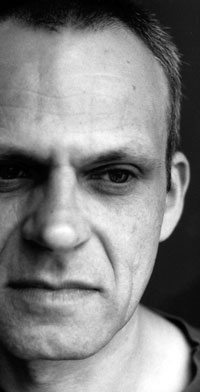

Frank Bretschneider
MILLE PLATEAUX / 12K
http://www.frankbretschneider.de
Frank Bretschneider works as a musician, composer and video artist in Berlin. His work is known for precise sound placement, complex, interwoven rhythm structures and its minimal, flowing approach. Described as "abstract analogue pointilism", "ambience for spaceports" or "hypnotic echochamber pulse-beat", Bretschneider‘s subtle and detailed music is echoed by his visuals: perfect translated realizations of the qualities found in music within visual phenomena. After studying fine arts and publishing several graphic editions, he began to satisfy his obsession for electronic music in 1984 by starting his first tape experiments and running a cassette label. With the founding of AG Geige in 1986, a successful and influential band of East Germany‘s musical underground, he began to explore the possibilities of an exchange between visual art and music by various means such as film, video or computer graphics. After the fall of the wall and the split of the band Bretschneider continued producing music and in 1996 he and Olaf Bender founded the record label Rastermusic which finally merged with Carsten Nicolai‘s Noton to form raster-noton in 1999. Since then he has been releasing his work through several record labels including 12k and Mille Plateaux and contributed to some well-known compilations like "Clicks & Cuts" on Mille Plateaux or Raster-Noton‘s "20' To 2000" series. As a remixer he has worked for artists like Jan Jelinek, Hauschka, Rechenzentrum, Meat Beat Manifesto, Richard Chartier to name just a few. He has performed at music and new media festivals such as Ars Electronica, Mutek, Sonar, Transmediale, SonicActs, Ultima, Transart etc. In addition to his solo work he has cooperated with Taylor Deupree, Olafur Eliasson, Steve Roden and Ralph Steinbrüchel. With Olaf Bender and Carsten Nicolai he runs Signal, another Raster-Noton project.